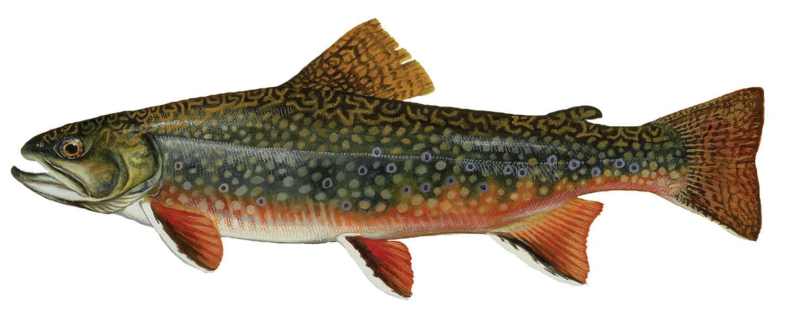

Fish of Maine Waters
Atlantic Salmon

Brook Trout

Large Mouth Bass
Northern Pike
Read on to learn more about the fish and shellfish that we have in Maine
Atlantic Salmon
Brook Trout
Large Mouth Bass
Northern Pike
Maine Department of Inland Fisheries and Wildlife was established in 1880 to protect Maine's big game populations. Today, the Department's wildlife division works to preserve, protect, and enhance all of Maine's wildlife resources including nongame wildlife and the state's endangered and threatened species.
-Maine Department of Inland Fisheries and Wildlife